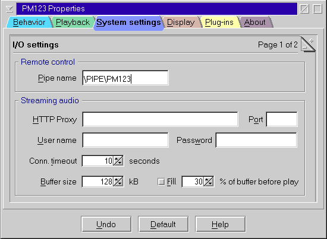

PM123's Display Configuration

Titel display
- Scrolls title
- Controll how to scroll the song title in the main window if it does not fit
in the given space.
- Infinite keeps scrolling the display forth and back until you start feeling sick :-)
- Once scrolls the display forth and back once after you load a song.
- Disable prevents the display from scrolling. Useful if you are scroll-sick.
- Default display
- Choose whether to show the filename, the Song title or some technical information (bitrate, frequency, mode) by default.
Font
- Use skinned font for display
- Allows to choose between skinned and non skinned font for display of title.
Skinned fonts are pretty, but they may badly fail to display some international characters.
- Choose font
- If you unchecked the above checkbox you may choose an arbitrary font for the title display
from the fonts currently installed on your system.